Open this document to read its complete text, figures and examples here.
A consistent geometry-to-audio model
Finite-element modes connect the visible object, its excitation and the synthesized sound.
A complete two-instrument performance, synthesized from modal mechanics. Play with sound, then explore how the instruments are built.
First hear the engine play music. Now inspect the mechanics behind it: a meshed body, its vibration modes and a visible acoustic response. The sound is synthesized from the model, without recorded instrument samples.
Compare the same score on the custom auto-tuned set, then listen to the other instrument voices. Every recording keeps its sound; press Play to listen.
Create a fully physically based virtual musical instrument, starting with a shape, its mass and stiffness. FEM gives its vibration modes; a strike, bow or rub excites those modes to reconstruct the sound. Each shape has its own sound profile. Turn it into an instrument through careful manual tuning or an algorithm that adjusts the geometry to reach musical notes, then assemble the instruments into choirs.
Explore connections Brochure · 10 chapters ↓Manually tuned instruments make the physics playable immediately. The instrument creation lab uses the same pipeline to ask whether a shape of your own can become a useful musical instrument.
Mesh the object and assign materials, supports and structural formulation.
Assemble K and M, then recover spatial vibration patterns and their frequencies.
Project strikes into the modal basis and synthesize their damped response.
Inspect exterior radiation separately from reduced enclosed-air coupling.
Use new forward solves to reduce pitch error and save the resulting design.
Schedule scores or MIDI on tuned instruments, with explicit transposition where needed.
Finite-element modes connect the visible object, its excitation and the synthesized sound.
The instrument creation lab explores that inverse problem through geometry search, mode tracking and excitation. Finding a frequency is only part of finding a playable note.
Range tuning, saved materials and strikes, MIDI import and ensemble persistence carry the experiment into performance.
Related techniques belong to one family. Follow a family into the interface, recorded results and mathematical detail.
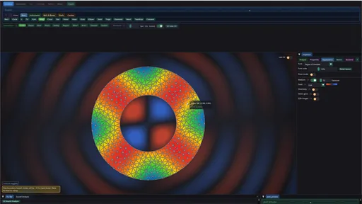
01 / 05Describe an object’s allowed motion, solve its spectrum and inspect the basis before it becomes sound.
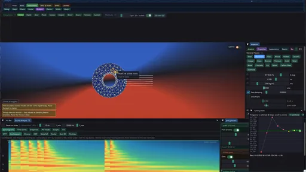
02 / 05Separate changes to the physical spectrum from changes to how that spectrum is driven and heard.
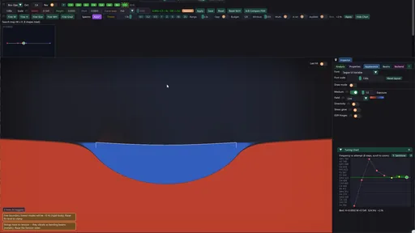
03 / 05A tuner repeatedly calls the forward model, then checks whether the intended audible mode actually reached the target.
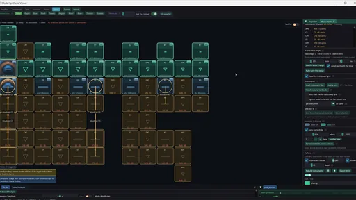
04 / 05Turn solved objects into a playable collection while retaining the evidence behind each note.
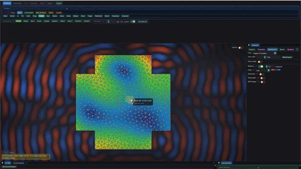
05 / 05Use the modal basis to investigate how structural motion connects to a reduced acoustic explanation.
Give a shape mass, stiffness and supports. Solve its natural vibration patterns, or eigenmodes, then excite them with a strike, bow or rub to produce sound. The harder inverse problem is tuning that response into an instrument. Modal2D begins with carefully authored instrument families and continues into a creation lab that asks whether a shape chosen first can become musical.
Scan the descriptions and figures, or open a layer for the implementation and mathematical detail.
Describe an object’s allowed motion, solve its spectrum and inspect the basis before it becomes sound.
The manually tuned collection begins with deliberately designed families: harps, drums, glass and coupled resonant bodies. Authoring them is substantial work: geometry, supports, material, playable regions and coupled components must produce useful modes together. These polished, versatile instruments can share resonators and cover larger ranges. Optional score fitting remains a separate playback convenience.
The instrument creation lab is a parallel experiment: what if the shape came first? Start with an object we want to hear, solve its response to an excitation, then investigate which modes could become useful notes, where to excite them and how to alter the geometry. Its auto-tuned results are usually simpler independent instruments. Arbitrary-shape design is the motivating problem, not a promise that every outline can be tuned automatically.
A procedural tone can be assigned any pitch, but a physical instrument has a more constrained relationship between its shape and its sound. Making a bar wider, changing its density or moving a strike changes more than one number. Modal2D exposes that relationship by deriving a finite set of vibration modes from a discretized object, then using those modes as the basis of its sound.
The workflow is shape, material and supports → finite-element matrices → eigenmodes → response to a chosen excitation → synthesized sound → instrument tuning → score performance. Intermediate results remain available: the mesh explains the discretization, mode shapes explain spatial motion, frequencies explain the spectrum, and excitation projection explains which modes are audible.
These recordings show the native application in use. Motion magnification and field exposure are display controls; the exterior medium view is a qualitative radiation visualization.
The final pair compares two cavity experiments. The string instrument visualizes pressure inside its shared cavity as well as the exterior medium around the body. Beside it, a single bar is struck with the prototype air-cavity resonator off and on: that adjustable, single-resonance audio effect is separate from the instrument's coupled cavity modes.
The forward question starts with an object: choose its outline, element formulation, support, material and excitation, then compute its response. The inverse question starts with a musical requirement: find a geometry whose relevant partial reaches a target pitch while retaining a useful decay and strike response. The second task repeatedly calls the first; it does not replace the mechanics with a table of recorded sounds.
A mode frequency alone is an incomplete instrument specification. The mode also has a spatial shape, a damping rate and an excitation weight. Two objects can share a fundamental yet have different upper partials. Two strikes on one object can select very different mixtures of the same modes. Modal2D makes these quantities editable and inspectable before assembling them into a performance.
This separates three meaningful experiments: geometry changes alter the solved spectrum; strike changes alter the mixture of an existing spectrum; playback transposition scales that spectrum as a musical operation. The first two explore the mechanical model, while the third makes a finite instrument library cover a larger score.
The native system has two main layers. libmodal owns geometry, assembly, eigenmodes, excitation and modal synthesis behind opaque object/result handles. The viewer owns the interactive editor, OpenGL displays, tuning orchestration, score playback and the surrounding audio-processing chain. Read-only queries expose meshes, frequencies, mode shapes and amplitudes without making the interface duplicate the eigensolver.
A structural edit invalidates the relevant solve. The solve worker can assemble and compute a replacement result while the viewer remains available; the application installs that result when it is ready. A strike on an unchanged object instead updates modal excitation. Those two actions have very different costs, so responsive playback does not imply that every mesh rebuild finishes within one frame.
CUDA is used for the small dense eigensolve path and for evaluating audio samples. OpenGL serves a different role: geometry rendering, overlays and the exterior-field compute passes. The sparse eigensolver and the geometry-search logic run on the CPU. This division makes the data flow more informative than a single GPU-enabled label.
The workspace includes sandbox experimentation, instrument editing, testing, instrument sets, refinement, Music and import/export. Strike, repeated excitation, pluck, bow, sweep, region and sustained-interaction tools explore different driving conditions. Some later excitation and nonlinear voice options are synthesis or control extensions around the modal model; they are not automatically a nonlinear finite-element simulation.
offline_projs/Modal2D/libmodal/include/modal/modal.hSolve worker ownershipoffline_projs/Modal2D/modal_viewer/src/app/solve_worker.cppReplay a coordinated schematic of geometry, mode shapes, excitation and the resulting signal. Follow how one event propagates through the representations.
Draws with
Artifact
Export
Purpose
Made with
Demonstrates
Wheel over the scene may zoom; move outside it to scroll the page.
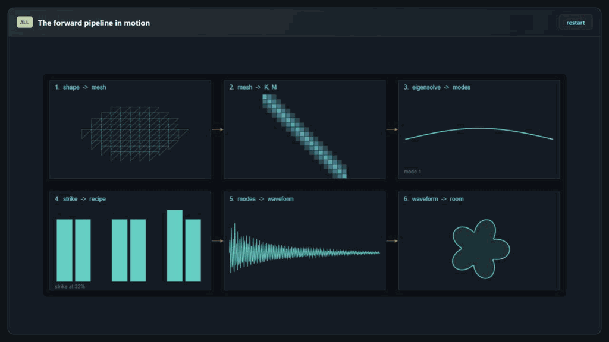
A synchronized explanatory animation using solved discrete-string modes and schematic assembly/propagation panels. The native application assembles and solves its own meshes; this overview does not run that full pipeline.
Suspended · activate to run; playback pauses after the full panel leaves the vertical viewport.
The core planar formulation uses constant-strain triangles with two displacement degrees of freedom per node. Material density enters the mass matrix, while elastic parameters and element geometry enter stiffness. Boundary constraints remove or restrict degrees of freedom, so changing a support changes the physical problem as well as the resulting pitch.
A free object can have nearly zero-frequency rigid-body modes. Those modes are expected consequences of the boundary conditions, not automatically a failed eigensolve. Conversely, a plausible-looking mesh does not establish convergence. The retained element type, mesh resolution and support configuration remain part of the instrument definition.
These recordings show the native application in use. Motion magnification and field exposure are display controls; the exterior medium view is a qualitative radiation visualization.
In the planar elasticity route, each mesh vertex contributes horizontal and vertical displacement. Linear shape functions interpolate displacement within each triangle. Their derivatives are constant, so the triangle has a constant strain–displacement matrix B. The constitutive matrix D converts strain to stress for the selected material. Integrating strain energy gives an element stiffness matrix; integrating kinetic energy gives its mass matrix.
Assembly adds each small element matrix into the rows and columns of its shared vertices. Neighboring elements contribute to the same degrees of freedom, which is how the discrete object transmits force. Most pairs of vertices share no element, so the matrices are sparse. Mesh connectivity determines the sparsity pattern; vertex numbering alone does not guarantee that all nonzeros lie close to the diagonal.
The CST route uses a consistent mass matrix. Supports change the admissible motion; the implementation enforces fixed degrees of freedom with symmetric row/column modification and a high stiffness penalty. A free object also supports rigid translation and rotation. These nearly zero-frequency motions must be separated from elastic modes before interpreting the audible spectrum.
offline_projs/Modal2D/libmodal/src/fem/element_cst.cppSparse element assemblyoffline_projs/Modal2D/libmodal/src/fem/assembler.cppInteractive assembly explanation ↗Other branches extend the representation: beams include rotation, strings use tension, thin plates model bending, and thicker plate or shell formulations introduce their own kinematics. Later solid experiments use tetrahedral meshes. These are different approximations to different mechanical regimes; switching between them is not simply changing the visual style of one universal solver.
The thin-plate route builds a curvature–displacement operator from transverse displacement and nodal rotations, with lumped translational mass and rotary inertia. Its DKT-style implementation fixes Poisson’s ratio to 0.3 inside the bending constitutive block. The thick-plate route adds transverse shear. The shallow-shell route composes membrane and bending blocks and adds height-gradient coupling: bending a curved surface can require stretching it, adding resistance to motion.
These choices determine which comparisons are meaningful. A string dominated by pre-tension can approach a harmonic series; a flexural bar or plate has different overtone spacing. Selecting a richer formulation is useful when it adds the missing motion, not simply because it has more degrees of freedom.
| Family | Unknowns per node | Mechanical role |
|---|---|---|
| Planar CST | uₓ, uᵧ | In-plane stretch and shear; optional orthotropic material |
| Beam / string | uₓ, uᵧ, θ | Axial motion and bending, with optional pre-tension |
| Thin plate | w, θₓ, θᵧ | DKT-style bending triangle with lumped mass |
| Thick plate | w, θₓ, θᵧ | Mindlin shear deformation and rotary inertia |
| Shallow shell | uₓ, uᵧ, w, θₓ, θᵧ | Membrane–bending coupling from a height field |
| Tetrahedral solid | uₓ, uᵧ, u_z | Linear elasticity throughout a coarse 3D volume |
offline_projs/Modal2D/libmodal/src/fem/element_dkt.cppThick-plate formulationoffline_projs/Modal2D/libmodal/src/fem/element_mindlin.cppShallow-shell couplingoffline_projs/Modal2D/libmodal/src/fem/element_shell.cppSolid elementoffline_projs/Modal2D/libmodal/src/fem/element_tet.cppPlanar outlines use constrained triangulation with quality and area controls. Hole contours change connectivity as well as removing material: they alter the available paths for stiffness and can localize motion. Porous presets therefore affect the mode structure, not just the object’s silhouette. The solid experiments use structured tetrahedral construction and can carve straight tunnel-like voids through the volume.
Mesh refinement should be judged by a sequence of solves: compare selected frequencies, mode shapes and strike response while decreasing the element area. A stable-looking animation at one resolution cannot reveal how far a partial has moved numerically. Extremely slender geometry is especially demanding because stiffness scales in different directions can become very different.
Disconnected parts introduce another issue. A global solver can return arbitrary mixtures of equal-frequency motions on independent components. The component solve isolates each structural block, embeds its modes into the full mesh, then merges the spectra. This keeps an instrument bar’s motion associated with that bar. Coupled cavity scenes use a shared structural basis because the air explicitly links the system.
offline_projs/Modal2D/libmodal/src/mesh/triangulator.cppStructured solid meshesoffline_projs/Modal2D/libmodal/src/mesh/solid_mesh.cppPer-component solveoffline_projs/Modal2D/libmodal/src/solver/eigensolve.cppLocalization regression casesoffline_projs/Modal2D/tests/test_component_solve.cppFollow the same design question from a triangle’s connectivity to matrix assembly, curved shells and volume meshes. Switch views to compare which representation each model needs.
Hover the triangular elements. The companion matrix highlights the degrees of freedom touched by each element and shows how shared nodes combine contributions.
Draws with
Artifact
Export
Purpose
Made with
Demonstrates
Wheel over the scene may zoom; move outside it to scroll the page.
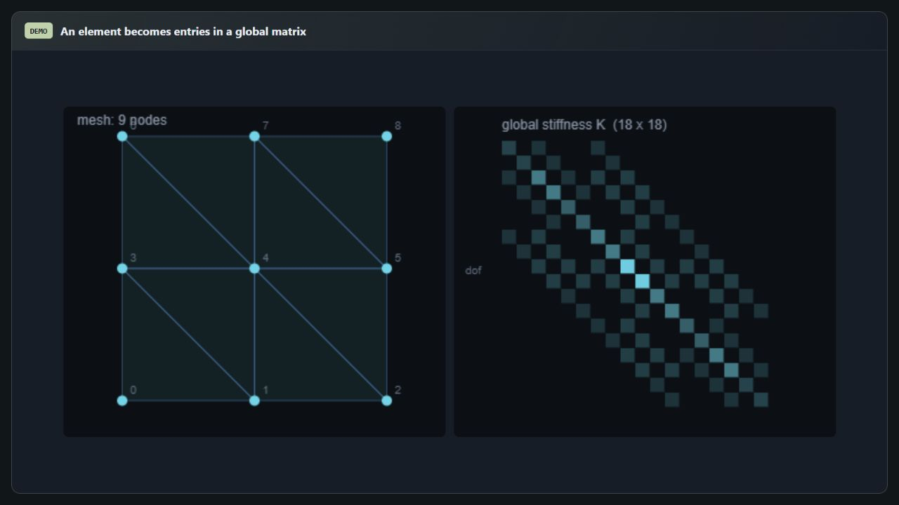
Connectivity assembly uses illustrative local coefficients (2 on the diagonal and −0.85 off it). It shows sparsity and indexing, not the native BᵀDB elasticity matrix or its material-dependent values.
Suspended · activate to run; playback pauses after the full panel leaves the vertical viewport.
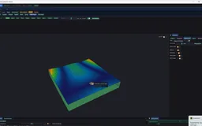
Recorded examples · 1Mechanical formulationsA thick body complements membrane, plate and string representations.＋The generalized eigenproblem pairs each mode shape with a squared angular frequency. Mass normalization gives the shapes a consistent scale for excitation and synthesis. A truncated set of these modes is enough to build a useful instrument, but it leaves out spatial and spectral detail above the selected range.
The application also deals with localized modes and multiple components. A low eigenvalue belonging to one component may be almost inaudible when another component is struck. Frequency order alone therefore does not identify the musically relevant mode.
Mode shapes are worth viewing directly. Rotationally symmetric objects often contain equal or nearly equal frequency pairs; any rotated combination spans the same physical eigenspace, so a solver can return a visibly rotated pattern without changing the underlying resonance. A strike selects a particular combination from that pair, which changes the visible motion and directional radiation even when the shared frequency stays fixed.
Modal2D needs the vibration frequencies of a particular object, including its supports, material and thickness. FEM turns those choices into stiffness and mass; the retained eigenmodes then make playback inexpensive. Accuracy still depends on the mesh, boundary conditions and mechanical formulation. This is a different objective from Crucible2.5D’s evolving material histories and large deformations. FEM can simulate those too, while MPM also uses a weak-form grid discretization. The distinction comes from the model and what each project needs to compute.
The live mass–spring preview is a separate approximation, not a smaller copy of the FEM mesh. It solves a small lattice with lumped nodal masses, axial springs and diagonal links for shear response. Its simplified geometry and stiffness do not preserve arbitrary outlines, holes or support conditions. Use its patterns as qualitative editing feedback; use the full FEM result to judge the instrument’s pitch. A separate adjustable cavity bandpass is likewise a one-resonance sound proxy, not a solution of the cavity’s spatial pressure modes.
The geometry-sensitivity route saves work in a different way: it retains an already solved FEM eigenvector, perturbs the mesh width, reassembles stiffness and mass, and compares Rayleigh quotients without another eigensolve. This remains a FEM-derived estimate. The current helper targets the basic planar triangle route; it does not provide a general derivative for every formulation. A small perturbation along an isolated mode branch can guide a search, but a fresh solve must check the proposed geometry. Near crossings or after large shape changes, the old mode may cease to be a useful predictor.
offline_projs/Modal2D/modal_viewer/src/app/mass_spring.hWidth perturbation and fixed-mode Rayleigh quotientsoffline_projs/Modal2D/libmodal/src/modal_api.cppAdjustable cavity bandpass proxyoffline_projs/Modal2D/modal_viewer/src/audio/audio_engine.cppSeek a motion that preserves its spatial pattern while oscillating in time. Substitution into the undamped structural equation yields a generalized eigenproblem. Its eigenvalue is squared angular frequency, while its eigenvector gives the displacement of every degree of freedom in that mode. Mass normalization removes an arbitrary scale from the vector and gives modal force projection a consistent meaning.
Collecting retained modes into Φ and substituting u ≈ Φq changes coordinates from vertices to modal amplitudes. With independent modal damping, each retained coordinate evolves as a scalar oscillator. This is the central computational saving: playback works on the retained spectrum rather than repeatedly solving the full coupled mesh.
Truncation still matters. A sharp or spatially localized strike may need high-frequency modes that a small basis omits. Numerical rigid modes and modes above the useful frequency range should not be counted as extra audible detail. The engine stores angular frequencies in radians per second, and the user-facing pitch divides them by 2π.
offline_projs/Modal2D/libmodal/src/solver/eigensolve_dense.cuSparse modal basisoffline_projs/Modal2D/libmodal/src/solver/eigensolve_sparse.cppThe dispatcher currently tries the float32 cuSOLVER generalized symmetric eigensolver for systems of at most 512 degrees of freedom. Larger systems use the CPU sparse route; a dense-path exception also falls back to sparse. The threshold is an implementation policy, not a measured performance law for every GPU or every mesh.
Shift–invert makes the low structural eigenvalues easier to extract. The code factors K − σM once, repeatedly solves against M times a trial vector, and builds a Krylov basis with M-inner-product reorthogonalization. It solves a small projected symmetric eigenproblem and transforms the resulting Ritz values back into frequencies.
The CPU route uses a sparse shift-invert Lanczos construction with a projected solve. Its current implementation is a fixed-subspace method; an older thick-restart description should not be read as an implemented restart mechanism. A dense cuSOLVER route provides an additional GPU path for suitable problem sizes. The available routes have different memory and problem-size tradeoffs, rather than a demonstrated universal speed hierarchy.
offline_projs/Modal2D/libmodal/src/solver/eigensolve.cppFixed-subspace shift–invert Lanczosoffline_projs/Modal2D/libmodal/src/solver/eigensolve_sparse.cppcuSOLVER pathoffline_projs/Modal2D/libmodal/src/solver/eigensolve_dense.cuAn eigenpair can be checked by substituting it back into the assembled equation. Mass orthogonality checks whether retained modes remain independent in the appropriate metric. Refinement and perturbation comparisons then ask whether those eigenpairs are stable under a better discretization or a tiny geometry change. These are distinct levels of evidence.
The relevant musical partial also depends on strike projection, radiation weighting and decay. A low mode localized on a different component may barely respond. A rapidly decaying fundamental may leave an upper partial perceptually dominant. This motivates the manual pin, audible-mode and decay-filtered tuning routes.
The source tests cover representative element, eigensolve and component cases. A comprehensive validation session would record residuals, orthogonality and mode correspondence across resolutions alongside the sound. The formulas below define useful checks; they do not imply that every one is already displayed in the current interface.
offline_projs/Modal2D/tests/test_eigensolve.cppComponent isolation checksoffline_projs/Modal2D/tests/test_component_solve.cppConditioning and strike relevance ↗Explore nodal patterns and a driven response, then switch to the discrete-string eigensolver to inspect how a modal basis is computed.
Choose rectangle, disc, triangle, hexagon or ring. Compare the six displayed mode patterns with the driven sand response; sweep the drive frequency or reshake the particles.
Draws with
Artifact
Export
Purpose
Made with
Demonstrates
Wheel over the scene may zoom; move outside it to scroll the page.
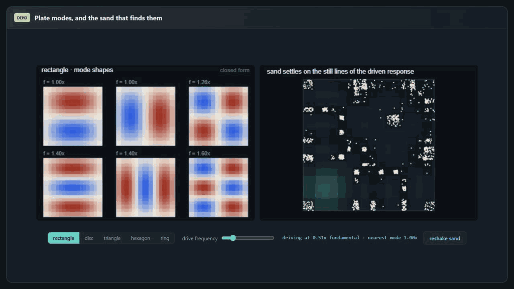
The rectangle uses separable discrete-string modes; the disc uses a Bessel basis. The other shapes use a small masked-grid Laplacian eigensolve. These are scalar membrane teaching models, not native vector elasticity or bending-plate FEM. The particle display is a nodal-pattern illustration.
Suspended · activate to run; playback pauses after the full panel leaves the vertical viewport.
Separate changes to the physical spectrum from changes to how that spectrum is driven and heard.
The instrument is not a single sound. Striking it injects a short impulse; bowing or rubbing supplies sustained, motion-dependent excitation. The same body can therefore produce a sharp attack, a long evolving tone or a very different balance of partials. Playing position and direction matter as well. Compare the recorded strikes, friction-driven tones and glass rubbing below.
An impulse is projected onto the retained mode shapes. A strike near an antinode can excite a mode strongly; a strike near its nodal line can leave it almost silent. The selected location and direction therefore determine a spectrum of modal amplitudes even when the geometry and eigenfrequencies stay fixed.
The historical strike path maps the selected point to the mesh and uses a boundary-oriented direction or an interior direction according to the interaction. Modal voices then sum damped oscillations. CUDA audio kernels generate PCM blocks that are transferred and synchronized for output. This is a concrete GPU synthesis path, but it does not by itself establish an asynchronous or low-latency performance guarantee.
Visual motion can be slowed for inspection while the audio remains audible at its intended frequencies. That separation is useful because real modal oscillations are usually too fast to read visually. It should not be mistaken for a change in the physical spectrum.
The striking result is how much sound comes from a compact model: a retained bank of damped modes, projected excitation and radiation weights already produces a convincing range of instruments. Rendering has a similar lesson—a surprisingly small physically grounded core can look or sound rich, while remaining open enough to change the geometry, gesture, damping and material independently.
These recordings show the native application in use. Motion magnification and field exposure are display controls; the exterior medium view is a qualitative radiation visualization.
For a mass-normalized mode, integrating a brief force over time gives a generalized impulse. Its projection determines the jump in modal velocity. A nodal line suppresses a mode only for a matching force component; direction is as important as position when a node can move along multiple axes.
The interactive point-strike path chooses a mesh location and builds directional modal weights, using boundary-normal information for boundary hits and a policy for interior hits. Other formulations and uniform strikes have their own routes. These implementation choices explain why a stored strike coordinate belongs with the instrument’s geometry.
The ideal impulse-response formula includes the conversion from modal velocity to displacement amplitude. In the renderer and synthesis state, stored amplitudes and gain conventions already package these choices. Comparing two hits should therefore keep material, spectrum, radiation weighting and gain fixed, then vary the strike position or direction.
offline_projs/Modal2D/modal_viewer/src/app/strike_projection.cppEngine strike routesoffline_projs/Modal2D/libmodal/src/modal_api.cppProjection testsoffline_projs/Modal2D/tests/test_strike_projection.cppReplacing a mode’s onset whenever another hit arrives would abruptly discard its previous ring. The synthesis state instead stores multiple amplitude/onset slots per mode and sums their responses. Rapid strikes then add new attacks while earlier hits continue to decay. The ring has finite capacity, so this is a bounded playback representation rather than unlimited event history.
The CUDA audio kernel assigns one thread to an output sample. That thread evaluates every retained mode and its active strike slots, applies the modal radiation coefficient, and writes a mono sample. The viewer’s audio chain then performs the selected voice and processing stages before stereo output.
Audio and visual time have separate purposes. Slow-motion displacement makes an oscillation readable, while audible playback runs on the audio clock. The native callback is configured for 44.1 kHz and 512-frame blocks, about 11.6 ms of samples per block. That block duration is not an end-to-end latency measurement; device buffering, synchronization and processing also contribute.
offline_projs/Modal2D/libmodal/src/audio/synthesis.cuStrike historyoffline_projs/Modal2D/libmodal/src/modal/strike_buffer.cppCallback and processing chainoffline_projs/Modal2D/modal_viewer/src/audio/audio_engine.cppA single strike starts a free decay. With continuous contact enabled, Bow and Bow+ instead apply a force that depends on the bow’s speed relative to the same modal body at the contact. The audio-rate model uses implicit midpoint integration and a regularized friction law, so the vibrating body feeds back into the excitation. Rub uses a filtered stochastic force. Releasing a contact lets the accumulated modal state decay.
Continuous contact is enabled by default. Turning it off restores the earlier repeated-impact Bow/Bow+ and noise-driven Sustain routes; the latter uses band-pass biquads centered on solved modal frequencies. The current friction model uses bounded iterations, a force limit and an aggregate-work safeguard for simultaneous contacts. It approximates stick–slip behavior in normalized mechanical units; it does not model bow width, contact heating or a fluid-coated finger.
A frequency sweep provides another experiment: the largest forced response occurs near a retained resonance, with damping setting peak width. A driven nodal pattern can be compared with a free mode, but a displayed Chladni-style field is not itself a simulated bed of moving grains.
offline_projs/Modal2D/libmodal/include/modal/sustained_modal_voice.hCurrent Bow/Rub controls and legacy comparisonoffline_projs/Modal2D/modal_viewer/src/app/app_continuous_contact.cppSustained resonator bankoffline_projs/Modal2D/libmodal/include/modal/resonator_bank.hDriven-pattern testsoffline_projs/Modal2D/tests/test_chladni_drive.cpp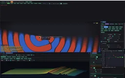
Recorded examples · 2Excitation and decayWaterfall and cochleagram views show how a chosen strike distributes energy across the spectrum.＋A useful session begins with a known geometry and support configuration, then a solve and a few strikes. Material controls expose stiffness, density, damping and, in supported formulations, anisotropy or fiber direction. Material palettes allow different regions to retain different assignments instead of forcing a single global material.
Within an unchanged formulation, raising stiffness generally raises frequencies while raising density lowers them. Damping mainly controls decay rather than providing an independent geometry-free tuning mechanism. Geometry changes require another solve because they alter mass and stiffness together. The controls make these distinctions visible instead of reducing the instrument to a single pitch slider.
An instrument’s sound belongs to both the resonator and the way it is played. Compare these waterphone studies, then the low-damping heart: preserving every long-lived partial can retain character, while damping can make the response shorter and easier to manage.
Within the same linear formulation, uniform stiffness and density changes scale K and M without changing connectivity. The generalized eigenproblem then gives the square-root stiffness-to-density frequency scaling. Changing proportions, supports, grain direction or spatial material assignments can alter relative partial spacing as well as the overall pitch.
Thickness has different meanings in different routes. It scales both mass and stiffness linearly for the simple in-plane membrane, so those factors cancel. Thin-plate bending stiffness instead scales cubically in thickness while translational mass scales linearly. Pre-tension provides yet another route: a tension-dominated beam approaches a string spectrum, while residual bending stiffness introduces inharmonicity.
Orthotropy rotates directional stiffness with the grain angle. Element material IDs and a palette allow different regions to contribute different constitutive matrices. These are structural edits that require another solve. Playback frequency shift is inexpensive, but it cannot reproduce the changed partial ratios of a newly proportioned composite object.
offline_projs/Modal2D/libmodal/src/fem/element_cst.cppBeam tensionoffline_projs/Modal2D/libmodal/src/fem/element_beam.cppMaterial and scaling discussion ↗The core applies damping as a per-mode ratio after the eigensolve. The optional slope increases that ratio with frequency, so upper partials can disappear more quickly. Even equal damping ratios give faster amplitude decay at higher angular frequencies. The result is a changing spectral balance through the ring, not just a master fade.
The nonlinear voice consumes the solved frequencies and damping but replaces the linear struck signal while active. Each mode is a two-pole resonator. A saturating envelope-energy proxy raises effective frequencies after a strong attack, then lets them settle downward. An octave-neighbor transfer injects energy into a higher resonator to create a blooming shimmer.
This is an implemented reduced DSP extension. Its amplitude-squared bookkeeping provides a controlled design for transfer, but it is not a derivation of nonlinear shell strain energy or a guarantee of exact physical energy conservation. The useful comparison is amount zero versus active glide and shimmer, keeping the underlying solved object fixed.
offline_projs/Modal2D/libmodal/include/modal/nonlinear_voice.hPer-mode dampingoffline_projs/Modal2D/libmodal/src/modal_api.cppNonlinear voice testsoffline_projs/Modal2D/tests/test_nonlinear_voice.cppA handful of decaying vibrations can already suggest a struck object, without a recorded sample. Listen, then change the pitch, damping and modal mixture to hear how much character this small model can produce. The second view shows how strike position selects those ingredients.
Press Play to hear the computed modal sum. Change pitch, damping, high-mode decay and the number of retained modes, then compare the waveform and fading envelope.
Draws with
Artifact
Export
Purpose
Made with
Demonstrates
Wheel over the scene may zoom; move outside it to scroll the page.
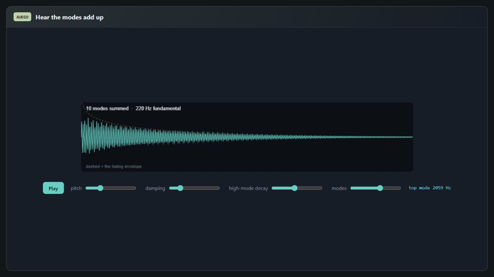
Audio is synthesized on request from the discrete-string modal ratios and damped sinusoids. The demo rescales the fundamental and uses illustrative amplitudes; it does not solve a new physical geometry when those sliders move.
Suspended · activate to run; playback pauses after the full panel leaves the vertical viewport.
The same excitation-and-decay idea becomes a Rive instrument: strike the surface or nodal diagram, then vary damping and pitch. Enable Listen inside the instrument.
Draws with Official Rive GPU Canvas + browser Web Audio
Artifact Signed visual .riv + procedural audio bridge
Export Standalone official CLI authoring; cross-project teaching study
Purpose
Made with
Demonstrates
Wheel over the scene may zoom; move outside it to scroll the page.
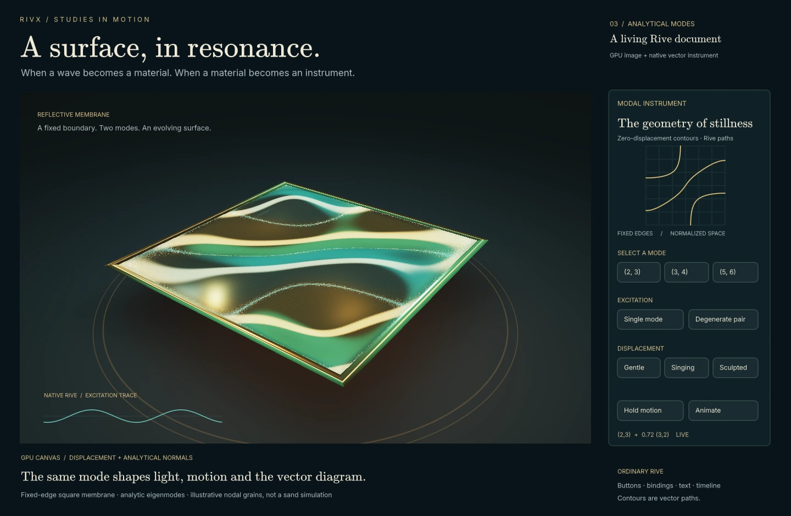
Nine analytic square-membrane modes drive a signed Rive GPU Canvas surface and Rive vector diagram. An optional Web Audio bridge sonifies the same modal weights and decay. This is a teaching model, not a rendering of the native FEM solver.
Suspended · activate to run; playback pauses after the full panel leaves the vertical viewport.
A tuner repeatedly calls the forward model, then checks whether the intended audible mode actually reached the target.
A manually tuned instrument begins with a design that already makes musical sense. Here the starting point can be a shape we simply want to hear. The task is to turn its available vibrations into a useful instrument: find a target partial, make it audible at a playable contact, and adjust the object without losing the character that made it interesting.
This is a quick example with a suboptimal base shape, rather than a finished instrument design. The last few notes sound tense and have insufficient sustained vibration. The adjacent glass-string recording shows another practical route: changing the material can improve the response without asking the geometry search to solve everything. These are observations from the examples, not a claim that one material fixes every shape.
In practice, the most reliable workflow so far is 1D search plus manual tweaking: choose a promising shape, material and contact, then restrict the automatic search to a parameter whose effect is reasonably predictable. This is a deliberate collaboration between the designer and the solver. A pitch match still needs a listening check for sustain, timbre and playability.
The lab also provides two-parameter searches and other proposal methods. Changing width and height can reorder modes or change which partial dominates, so alternating X/Y searches or naive gradient descent are not reliably sufficient. Gradients remain useful locally when a simple eigenmode is tracked consistently; mode switches, competing partials and multiple local solutions require more care. Reducing the search space manually makes these ambiguities easier to inspect.
The tuning tools search for geometry whose selected or dominant frequency matches a target. Width bracketing and bisection provide an interpretable baseline; uniform size adjustment and alternating width/height searches cover other parameterizations. Multi-bracket and dominant-audible-mode variants address cases where the first simple search follows the wrong branch.
The displayed cents error provides a musically meaningful scale for the target mismatch. A small numerical tolerance only certifies that chosen target criterion; it does not prove that the rest of the spectrum, decay or sound quality matches a desired instrument. Different geometries can have the same fundamental and very different timbres.
Not every shape reaches a clear, sustained target note through the current controls. The difficulty is not simply having many modes: harmonic partials can reinforce a pitch, while inharmonic spectra can make useful bells and percussion. The inverse problem is to shape the audible response, including excitation and decay. More freedom in mass, stiffness and physically consistent prestress could help; it is an extension of the design space, not a guarantee of success.
After tuning and assembling a custom set, replay the opening score. This connects the geometry-search workflow to a musical result, rather than stopping at a frequency readout.
A tuner first needs a scalar observation. It may use the lowest elastic mode, a manually pinned mode, the strongest audible mode or a mode within a decay window. Those policies can return different answers on the same spectrum. Pinning and auditioning the intended partial makes the target reproducible.
The shared tuning cycle builds a candidate, waits for its solve, applies or reuses the intended strike, reads the selected response and proposes another geometry. The visible cents error is a logarithmic frequency ratio, so octave-spaced targets have comparable tolerances. The search should also preserve its best measured candidate when a later proposal worsens the result.
A small error certifies the selected pitch condition at the measured geometry. Timbre, decay, excitation and support remain separate requirements. A useful tuned note stores its shape and relative strike point together, so performance excites the same motion that was inspected during tuning.
offline_projs/Modal2D/modal_viewer/src/app/tune_verdict.hA rich spectrum can still have a clear pitch. Harmonic partials can support one perceived fundamental even when that fundamental is absent from the signal. A bell can also have useful inharmonic partials. Many modes therefore do not make a shape inherently unsuitable; their organization, relative levels and decay matter more than their count.
An eigenmode contributes only through the way it is excited and heard. Strike near one of its nodes and its excitation can be weak; couple it poorly to the pickup or radiation field and visible vibration may produce little sound. A rapidly fading low partial can leave an upper partial dominant. Several similarly strong, unrelated partials may make pitch ambiguous, or be exactly the intended percussion sound.
The practical target can be one prominent partial or a useful pattern of partials, with a playable contact and suitable release. Bharaj and colleagues' metallophone design work is a relevant example of optimizing frequencies and amplitudes together through shape changes and perforations. Modal2D's current searches do not reproduce that full algorithm. A failed search can also reflect limited parameters, sampling or numerical conditioning; it does not prove that no physical design exists.
Changing one width gives only a narrow route through the possible spectra. Local mass, thickness, stiffness, holes and supports offer more control because different modes concentrate motion and strain in different places. With stiffness fixed, added mass where a mode moves strongly tends to lower its frequency; with mass fixed, added stiffness where it stores strain energy tends to raise it. A real geometry edit generally changes both, so its net effect must be checked.
Prestress can change the tangent stiffness as well: a taut string is the familiar example. The stress must belong to a physically consistent loaded state. Compression can soften modes and approach buckling, and a freely painted stress field is not automatically an equilibrium. General prestressed analysis linearizes small vibrations about the loaded configuration; prescribing beam tensions is a useful special case.
This is a promising extension, not an unrestricted spectrum editor. Positive mass, material limits, stable stiffness, supports and the desired visible shape constrain what can be realized. More parameters can improve a feasible design and also make the search harder. A useful optimizer would track several relevant modes, excitation and decay, then verify the resulting mechanics and sound.
| Control | Current scope | What changes |
|---|---|---|
| Dimensions, material, contact | Existing creation and tuning tools | The supported geometry's mass/stiffness and the excitation of its modes. |
| Prescribed beam/string tensions | Existing beam controls and authored recipes | Geometric stiffness in the supported beam model; not a general equilibrium stress solve. |
| Spatial mass/stiffness and prestress optimization | Research extension | A richer constrained search over several audible modes; no general automatic solver is claimed. |
| Score pitch fitting | Existing playback convenience | Frequency-transposed modal synthesis, with no new geometry, mass or stress design. |
offline_projs/Modal2D/libmodal/src/fem/element_beam.cppBisection is effective when a continuous mode branch is bracketed across the target. A preliminary sweep can find several such brackets instead of trusting one global trend. Alternating width and height handles two parameters, but can waste work on an axis to which the selected mode barely responds.
Fine-Grad measures local width and height elasticities with probe solves. It takes a damped minimum-norm step in log dimensions, bounded by the search region and a maximum change. This gives an interpretable direction: move the dimension whose local influence best reduces the measured error.
Experimental Bayesian width or width/height searches model the response and choose informative next evaluations. Calibration tools fit a local size-to-frequency relationship from actual solves, predict a useful next geometry and then refine it with the physical solver. A surrogate prediction is a proposal, not a completed instrument: the next eigensolve supplies the actual frequencies.
| Route | Proposal rule | Useful situation |
|---|---|---|
| Fine-W / Fine-Size | Bracketed one-dimensional updates | A stable branch reaches the target with one parameter |
| Fine-WB / adaptive variants | Sweep, preserve promising intervals, refine | Several roots or audible-mode changes are plausible |
| Fine-WH | Alternate axis searches | Both dimensions need adjustment |
| Fine-Grad | Finite-difference log-space step | One axis matters more, or both should move together |
| Bayes-W / Bayes-WH | Gaussian-process expected improvement | Sampled exploration of a more irregular response |
| Manual pin / decay filter | Change which mode is observed | The default lowest partial is not the intended sound |
offline_projs/Modal2D/modal_viewer/src/app/tune_grad.hGaussian-process modeloffline_projs/Modal2D/modal_viewer/src/app/gaussian_process.hNamed tuning routes ↗The current range driver begins from the chosen family, height, shell setting and material. It samples widths across its supported range, solves each candidate and records usable low frequencies. For each requested note it picks the nearest measured candidate in cents, then delegates to the existing refinement process. Targets far from all sampled candidates are reported as missed.
This differs from the earlier two-solve calibration design, whose power-law fitting helper remains in the source and tests. A size law can be a good local approximation, but a mixed or poorly conditioned family may change mode ordering or lose a low mode as geometry changes. A measured table avoids assuming global monotonicity; its finite sampling still cannot prove that every achievable note was found.
The polish step remains the meaningful completion path. The optional unpolished branch seeds a library entry with target metadata, so its displayed zero error should not be treated as an independently verified solve. The brochure’s demonstrated workflow uses refinement and a pitch check after material or geometry edits.
offline_projs/Modal2D/modal_viewer/src/app/app.cppScaling helpers and health checksoffline_projs/Modal2D/modal_viewer/src/app/tune_predict.hThe project’s later notes describe investigations where tiny width perturbations caused large spectral changes. Those results depend on geometry, slenderness, mesh and precision; they should not be generalized into a statement that a whole family is untunable. The practical distinction is between a difficult response surface and an unreliable numerical observation.
If the same mode changes smoothly, better bracketing, tracking or a local derivative can help. If the discretization changes abruptly or an eigensolve returns unstable modes, the next step is to inspect element quality, returned mode count and perturbation behavior. Running the search longer does not restore information lost upstream.
A separate thickness helper exploits the near-linear frequency law of thin bending plates while keeping the in-plane mesh fixed. It predicts and verifies a thickness correction, and has dedicated source tests. The inspected viewer has no call site for that helper, so it is an unintegrated prototype rather than an active Music control. The law also ceases to be the same approximation in the thick-plate regime.
offline_projs/Modal2D/modal_viewer/src/app/tune_predict.hGeometry and scaling probesoffline_projs/Modal2D/tests/test_music_autotune.cppAs geometry changes, neighboring modes can exchange frequency order. Following a list index can then tune a different physical motion halfway through a search. Modal2D compares resampled shapes using the modal assurance criterion, which measures similarity independently of a mode vector's arbitrary sign.
This comparison helps maintain a mode identity across solves, but it is still a heuristic under large shape changes, near-degeneracy or different localized motion. Confidence thresholds guide the search; they are not a proof that a unique mode exists throughout the parameter path.
Mode vectors are arbitrary up to sign. They can also exchange frequency order as parameters change. The modal assurance criterion squares a normalized inner product, making it insensitive to sign and overall scale. The application compares resampled spatial representations to track a pinned motion between differently shaped meshes.
Near a repeated eigenvalue, several independent vectors span the same eigenspace and the solver may rotate that basis. Individual-vector correlation can then fall even when the subspace remains similar. Large geometry changes and strong localization changes create additional ambiguity. The displayed confidence is therefore useful diagnostic information rather than a guarantee of correspondence through every shape change.
The most informative comparison combines the tracked shape, its frequency, the MAC score and its strike amplitude. If the score collapses, the user can repin the intended motion instead of silently following a new index.
offline_projs/Modal2D/modal_viewer/src/app/mac_track_logic.hTracking testsoffline_projs/Modal2D/tests/test_mac_track_logic.cppManual pin and MAC workflow ↗Differentiating the generalized eigenproblem cancels the derivative of a normalized eigenvector and leaves a quadratic form involving changes to stiffness and mass. This explains why one can estimate frequency sensitivity with matrix assembly around a current mode instead of performing a complete new eigensolve for every derivative term.
A sensitivity route uses the generalized eigenvalue derivative to propose a Newton-like update, guarded by bracketing and fallback. In the current implementation, matrix changes are estimated by perturbation before applying the derivative expression, and support is concentrated in the planar triangle route. Unsupported formulations fall back rather than receiving an invented derivative.
This method assumes a locally meaningful isolated mode branch. At mode crossings, under remeshing changes or with a poorly converged eigenvector, the derivative can be a poor predictor. Comparing its predicted frequency change with the next solve makes that failure visible.
offline_projs/Modal2D/libmodal/src/modal_api.cppSensitivity acceleration and supported route ↗Sweep a shape parameter, weaken the coupling, and watch five computed eigenmodes approach and exchange their basis character. Follow a sorted mode index or highlight the contribution of one fixed basis shape.
Draws with
Artifact
Export
Purpose
Made with
Demonstrates
Wheel over the scene may zoom; move outside it to scroll the page.
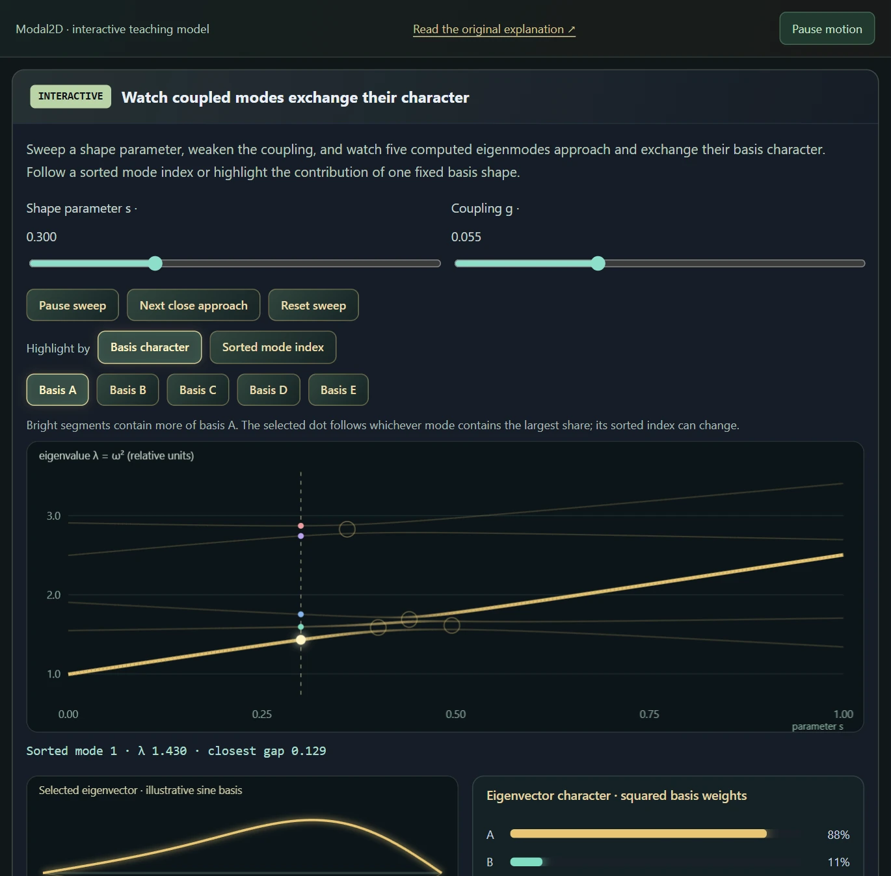
A symmetric five-by-five operator retains the diagonal trends and nearest-neighbour coupling of the original teaching article. A live Jacobi eigensolve supplies eigenvalues and normalized eigenvectors. The animated shape uses five illustrative sine functions; it is not a native FEM geometry. Fixed-basis weights reveal character exchange, rather than implementing the native mesh-aware MAC tracker.
Suspended · activate to run; playback pauses after the full panel leaves the vertical viewport.
Turn solved objects into a playable collection while retaining the evidence behind each note.
Music mode connects the mechanics to a practical outcome. Saved instruments retain geometry, material and strike choices. A score requests notes, and the mapping system looks for a suitable solved instrument for each pitch. The range auto-tuner can construct additional instruments through calibration and refinement instead of merely resampling every note from one sound.
Missing notes are filled for convenience: borrow an available instrument or contact region, then transpose its modal spectrum to play the requested pitch. Manually tuned instruments and hybrid ensembles can therefore cover a score beyond their physical note range. The recorded import grid uses blue for a note's own shape and gold for a borrowed, shifted source. This remains sample-free synthesis, but the fitting step is deliberately nonphysical: it does not construct a newly tuned geometry for every note.
Hybrid ensemble can select one source per pitch or layer overlapping instrument sets. A file of imported note bodies remains one set and selects its best contact internally; overlapping independent sets can then play together. Shared range controls specify which score pitches a set may cover, including pitches supplied by fitting. Separate MIDI tracks that share a pitch still use the same selection or layer combination; independent track routing remains an application feature to add.
The manually tuned instrument and hybrid routes now offer 19 material choices, including automatic family recipes, diamond, effective carbon fiber and rubber. A material changes the stiffness, mass and damping used by the physical model. A per-note material variant is a separately solved body and resonance bank, assigned to that note; it does not silently replace the material of one member inside the original coupled assembly.
Low-loss recipes can ring for several seconds. Rendered ring-out can retain up to 40 seconds after the last score note, while the live decay remains the model’s own response. Longer export duration captures the sustain; it does not manufacture it. These material recipes are explicit sound-design approximations: carbon fiber and wood are effective isotropic models, and the rigid-bore horn solves air pressure rather than wall vibration.
The score supplies a pitch, onset, duration and velocity. The physical source supplies solved modal frequencies, damping, mode shapes and the excitation weights at a playable contact. Imported instruments, manually tuned instruments and hybrid ensembles reuse these ingredients to fill notes that were never physically tuned in the source library.
Selection comes first. Fit score pitches prefers an exact note label, then the same note name in the closest available octave, then a nearby chromatic note. Among equally distant contacts, the lower source note wins. Thus C4 is preferred over B5 for a requested C6 when octave-first fitting is enabled. Imported libraries also respect their configured shift limits; manually tuned instrument and hybrid fitting can extend a single octave across a score.
Transposition comes next. Every retained modal frequency is multiplied by the same ratio: borrowing C4 for C5 doubles the spectrum; borrowing C4 for C♯4 multiplies it by about 1.05946. Relative partial spacing survives, including inharmonicity, but this does not guarantee unchanged timbre, decay or perceived tuning. Large shifts are especially different from redesigning the instrument. An optional measured-pitch correction uses the selected contact's measured modal pole instead of trusting its nominal note label; that pole is not a guarantee of the perceptually dominant pitch.
There is no new finite-element solve for a fitted note: the mesh, material and spatial mode shapes stay as they were. In manually tuned instrument and hybrid playback, events using the same source and frequency ratio share a state and can excite its resonance. Different ratios use independent modal banks. Their combined visualization does not imply mechanical coupling between those transposed copies. Manual contact playback still excites the original, unshifted body.
Preserve fitted-note level compensates the extra amplitude scaling introduced by transposing the bank. It keeps high borrowed notes from becoming artificially faint; it does not normalize every note to the same loudness. The sound still comes from the model, with no recorded instrument sample, but the frequency and level fitting are musical playback operations. Exact-only and legacy nearest-contact options remain available for comparison.
| Operation | What changes | What it means |
|---|---|---|
| Physical tuning | Geometry or material, followed by a new solve | Find an actual body whose audible response reaches the target. |
| Contact selection | Where the existing body is excited | Change the mixture of its existing modes; no new eigenfrequencies. |
| Playback pitch fitting | Modal frequencies and optional listening-level compensation | Cover the score for convenience, without claiming a newly tuned physical instrument. |
offline_projs/Modal2D/modal_viewer/src/app/music_suite_score.hContact selection, spectrum transposition and shared modal banksoffline_projs/Modal2D/modal_viewer/src/app/music_hybrid_render.hImported-library assignment and coverage rulesoffline_projs/Modal2D/modal_viewer/src/app/music_map.hScore syntax and timingoffline_projs/Modal2D/modal_viewer/src/app/score.hMIDI event importoffline_projs/Modal2D/modal_viewer/src/app/midi_import.hA simple size law can work for a restricted shape family. Once width, height, cavities, supports or materials change independently, the audible partial need not move monotonically. Modes can exchange order or character near crossings, and a mode that reaches the target may barely respond at the chosen contact. Searching only for the nearest eigenfrequency can therefore produce the right number and the wrong instrument.
Physical auto-tuning needs repeated solves, mode tracking and a check that the target partial can actually be excited and heard. The tuning and exploration tools investigate that problem. Score fitting intentionally takes a cheaper route: reuse a solved response and transpose it so the music can play now. It is one of the clearest departures from the project's physical construction, kept for convenience rather than presented as a substitute for solving the inverse problem.
In Hybrid ensemble, click a pad to hear its routed sound and contacts; Shift-click selects silently. Auditioning uses a separate buffer, keeping the rendered full score ready to play again. The live score, illuminated pads, layer colors and contact links follow whichever performance is currently heard, including every activated set when ranges are layered.
Manually tuned instruments remain visible as complete moving bodies. Selecting an imported source also opens an enlarged gallery view while keeping its source-pad thumbnail. Borrowed notes connect to the actual mesh node where that source is excited.
Instruments and coverage exposes the selected source's Body material and imported Strike X/Y controls. Material changes rebuild its physical model; moving a strike reprojects the existing modes without another eigensolve. The material selector distinguishes known recipes from imported or custom values.
Body vibration, cavity pressure and exterior medium have independent display switches. Motion magnification spans 0–8×; cavity and medium exposure each span 0.125–16×. Reset display reference clears the held visual normalization, and setup files retain the gains and visibility choices. These controls change the display, not the sound: cavity pressure comes from the coupled solve, while the exterior medium remains a radiation proxy.
offline_projs/Modal2D/modal_viewer/src/app/app_music_hybrid.cppImported material solves and physical contact projectionoffline_projs/Modal2D/modal_viewer/src/app/music_hybrid_body.cppEach newly imported instrument file becomes one named set containing its note bodies. Copying the current custom-instrument library also creates one set. Lowest note and Highest note include both endpoints; allowed note names filter target pitches within that range. Member limits intersect the parent set's coverage, so a one-note material variant stays local. A manually tuned instrument acts as an independent set.
A set's configured range can exceed its physical notes: with pitch fitting enabled, one octave may cover MIDI 0–127. Use physical note span selects its authored endpoints; Full MIDI range permits 0–127 and all note names. Show coverage on pads highlights the configured allowed range even when another source wins some notes. Fit grid to this range changes the visible octaves, not the routing limits.
Layer overlapping instrument sets is off by default. One source then wins: exact note first; with octave-first matching enabled, the same note name precedes another pitch class; nearest pitch and source order resolve the remaining choices. Turn layering on and one best contact is selected within every eligible set, then those sets play together. Thirteen imported notes from one file therefore supply one suitable contact, rather than thirteen simultaneous copies.
For example, a harp allowed C3–C6 and a bell set allowed C4–C5 both play C4 when layering is on; only the harp plays C3. A manual override changes the contact in its own set and may bypass its range, while other eligible sets still participate. Disabled sets or members remain excluded, and muting a pitch suppresses every layer for it. Pad colors and live connections expose the selected layers and their actual contacts.
Older imports without file-group provenance remain independent. Group legacy imported notes as one set is an explicit migration that preserves their member limits. New groups, ranges, overlap policy and coverage highlights persist with the Hybrid setup. The original import mode stays unchanged. Audio layers are summed before one final normalization; the mix does not create mechanical coupling between independent sets, nor assign different timbres to MIDI tracks sharing the same pitch.
| Control | Effect |
|---|---|
| Set range and note-name mask | Permit target score pitches; fitting can supply notes outside the original octave. |
| Member limits | Narrow the parent range for an individual note body or material variant. |
| Show coverage on pads | Reveal configured coverage independently of which source currently wins. |
| Layer overlapping instrument sets | Choose one contact per eligible set and play the selected sets together. |
| Manual override / mute | Override one set's contact, or mute all layers for a pitch. |
offline_projs/Modal2D/modal_viewer/src/app/app_music_hybrid.cppSingle-source selection and one contact per overlapping setoffline_projs/Modal2D/modal_viewer/src/app/music_hybrid_render.hThe Music grid displays the instruments that cover the score, with strikes linked back to their source objects. Per-instrument material assignment allows a set to mix different mechanical responses. A material change can invalidate a stored pitch: the instrument needs another solve and check before the old tuning label can be trusted.
The ensemble file carries more than note names. It retains instrument geometry, material metadata, strike coordinates and arrangement settings so a session can be reconstructed. Older files without per-instrument material fields use compatibility defaults. Importing an additional library and replacing the current one are deliberately different operations.
Offline audio rendering and WAV export turn the design into an output artifact. The visual performance remains useful for inspecting which source plays each note; an exported phrase supplies the listening comparison. A complete evidence capture pairs the note mapping with the generated audio and records whether reverb, nonlinear voice or pitch shifts are enabled.
The selected-note inspector reconnects the performance to its mechanism: geometry, material, strike location and modal information remain visible. Ensemble persistence and audio export make the result reusable. The MIDI importer handles the supported note, timing and part data, but does not claim a complete General MIDI synthesizer with every controller, program and pitch-bend behavior.
offline_projs/Modal2D/modal_viewer/src/app/ensemble_file.hInstrument fields and compatibilityoffline_projs/Modal2D/modal_viewer/src/app/instrument_file.hOffline music rendering testsoffline_projs/Modal2D/tests/test_music_render.cppPersistence testsoffline_projs/Modal2D/tests/test_ensemble_file.cppSound Analysis separates two sources. Solved modes builds a modeled line spectrum from modal envelopes and damping widths; it is useful for inspecting a single object's mechanics. Heard output analyzes the final stereo samples sent to playback, including rendered scores, fitted pitches and downstream effects. Auto selects heard output for Music and the continuous instrument voices, so the waterfall continues to follow the sound when playback comes from a rendered buffer.
With heard output selected, the spectrogram and waterfall use windowed FFT analysis; cochleagram and note-band views reorganize that spectrum. Stereo powers are combined without cancelling opposite-phase channels. The callback's sample clock supplies fresh data, and pause holds the spectral history. Restarting or seeking clears the old segment. The CQT-like view remains a chromatic band display rather than a separate constant-Q transform. Per-mode fields and decay diagnostics still require solved-mode data: an audio mixture alone does not identify the physical mode shapes of its instruments.
The audio chain includes optional sustained and nonlinear voices, gating, filtering, soft limiting and stereo reverb. Reverb offers a Schroeder–Moorer-style comb/all-pass route and partitioned convolution with an impulse response. Comparing a modal envelope with a post-effect waveform distinguishes what came from the object from what came from the listening-space and voice processing.
offline_projs/Modal2D/modal_viewer/src/app/sound_analysis_pcm.hAnalytical spectral viewsoffline_projs/Modal2D/modal_viewer/src/app/sound_analysis_compute.hHistory and perceptual layoutsoffline_projs/Modal2D/modal_viewer/src/ui/viz_sound_analysis.cppAlgorithmic and convolution reverboffline_projs/Modal2D/modal_viewer/src/audio/reverb.hProcessing orderoffline_projs/Modal2D/modal_viewer/src/audio/audio_engine.cpp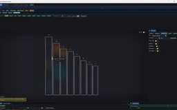
Recorded examples · 1Solved instruments become musicA family of tuned objects is assembled into playable notes.＋Follow one object through its mesh and supports, a selected mode, a strike and its spectrum, then a target pitch and a checked geometry change. Finally, hear it in a short score. This connects the numerical method to the instrument you can play. It also makes intermediate failures useful: a mode switch, insufficient tuning range or borrowed note has a visible reason.
The current scope is reduced modal mechanics and synthesis with selected experimental extensions. Mesh convergence, listening quality, latency, open acoustic radiation and general nonlinear coupling require separate measurements. Those boundaries leave a focused achievement: editable physical instruments, inspectable spectra and a score pipeline that states exactly when it uses solved geometry and when it uses musical approximation.
This is the project as a playground rather than a fixed workflow: edit the object, inspect individual modes, compare structural and medium views, and test the experimental 3D branch. Motion magnification and field exposure are display controls; the exterior medium view is a qualitative radiation visualization.
The primary guides span several generations of the application. The technical details here follow the inspected implementation where those accounts differ: the sparse solver has one fixed Krylov build, the plate kernel’s concrete choices include lumped mass and a fixed internal Poisson ratio, and Music’s active range driver samples candidate widths. The long source notes remain available as design history and deeper mathematical context.
A useful next validation campaign would connect element convergence, eigenpair residuals, shape perturbations and audible partial selection. For acoustic coupling, the next model improvement is signed interface quadrature and explicit open-boundary treatment. For nonlinear instruments, a reduced nonlinear mechanical model would connect amplitude-dependent pitch and energy exchange to structural parameters.
The source includes focused tests for mechanics and later workflows, including tuning scale behavior, music rendering, MIDI handling, persistence and acoustic extensions. This brochure's source audit did not run a fresh native build or those tests, so their presence is reported as implementation evidence rather than a new pass claim. The screenshots are genuine desktop captures.
| Layer | Current scope | Next useful evidence or extension |
|---|---|---|
| Linear structure and modal synthesis | Implemented FEM routes and reduced oscillators | Resolution studies, residuals and listening comparisons |
| Sparse eigenbasis | Fixed-subspace shift–invert implementation | Convergence criteria and restart strategy |
| Nonlinear voice / sustain / reverb | Implemented reduced DSP and processing | Separate output analysis and parameter-controlled listening |
| Exterior Field Lab | Dominant-frequency boundary-source visualization | Calibrated source model and propagation validation |
| Cavity coupling | Sealed pressure modes with reduced interface surrogate | Signed boundary quadrature and open-port radiation |
| Thickness tuner | Helper and tests; no inspected viewer call site | Integrate a verified thin-plate workflow |
| Music range tuning | Measured candidate table plus refinement | Verified pitch metadata for every stored result |
Use the modal basis to investigate how structural motion connects to a reduced acoustic explanation.
The exterior acoustic field view constructs a complex phasor field from modal sources, directional factors and softened two-dimensional spreading. Amplitude and phase views make interference and source placement inspectable. This is a reduced frequency-domain visualization, not a transient pressure-wave solve throughout the surrounding air.
The medium-feedback experiment adds a heuristic response back into excitation. Its use of displacement-based source information and simplified distance behavior should not be described as a complete reciprocal fluid–structure coupling. Likewise, the current exterior-field implementation contains assumptions about sound speed that deserve attention before comparing different media quantitatively.
The displays separate the two air regions. Interior cavity pressure belongs to the coupled cavity eigenproblem inside a closed body; exterior medium color visualizes radiation around it. When both are enabled, cavity priority keeps the enclosed field legible instead of allowing the exterior overlay to cover it. Their exposure controls affect only visualization, not the synthesized level.
A cavity adds an enclosed-air response to the vibrating structure. Resonance transfers or sustains energy in selected modes, allowing one part to respond when another is excited. The first recording toggles the simpler air-cavity audio resonator; the next two inspect cavity-and-structure models. Two further recordings show resonance between bodies.
The engine’s planar radiation helper sums each mode’s normal displacement around the boundary, weighted by associated segment length. The signed sum captures a useful cancellation mechanism: opposite boundary motions can contribute less net radiation than motions that reinforce. The resulting coefficient weights the mode in the audio sum, alongside its excitation and damping.
The current helper then normalizes all modal coefficients by the largest absolute coefficient. This supplies relative modal weights rather than a calibrated pressure prediction. A uniform nonzero density factor cancels in that normalization, so changing the medium-density input cannot be interpreted as an absolute loudness experiment through this helper alone.
The Field Lab instead evaluates distance-dependent complex contributions over space. Its colors answer where interference and phase structure occur in the reduced exterior model. The audio coefficient, the exterior image and a coupled cavity mode therefore have different definitions and should be compared using their own observables.
offline_projs/Modal2D/libmodal/src/modal/radiation.cppUse of modal radiation coefficients in soundoffline_projs/Modal2D/libmodal/src/audio/synthesis.cuThe current Field Lab first sums boundary-source contributions into a complex texture. Each contribution uses distance-dependent phase, softened spreading and an outward-facing weight. A second pass derives the live pressure-like view, envelope, phase, complex coloring and differential views from the same stored real and imaginary channels.
This is a monochromatic reduced exterior model. Its source weights come from the object’s modal visualization, with a dominant-frequency approximation. Reflections, occlusion, diffraction and calibrated absolute pressure are outside this field construction. The mathematical views remain useful for inspecting interference and phase structure within that chosen model. The inspected viewer supplies a fixed 343 m/s to this field shader.
Complex differences avoid directly subtracting wrapped phase angles. The implementation builds a phase-gradient-related vector from Im(conj(P)∇P), then displays its magnitude/orientation, curl and divergence as field diagnostics. Their numerical scale and sign convention belong to this visualization; they should not be read as calibrated acoustic power-flow measurements.
The spacetime view reconstructs pressure-like values at a bounded sequence of times and composites them as a sheared slab. It reveals moving phase fronts and persistent nodes without storing a full time simulation. It is a rendering of the harmonic field’s analytic time coordinate.
| Views | Question |
|---|---|
| Live / envelope | How does the field oscillate, and where does its amplitude remain small? |
| Phase / complex | How do phase fronts align with strong and weak regions? |
| Intensity-style / curl / divergence | What spatial structure appears in the phase-gradient diagnostic? |
| Envelope Laplacian | Where does amplitude change sharply? |
| Spacetime | Which nodal structures persist across the harmonic cycle? |
offline_projs/Modal2D/modal_viewer/src/app/app.cppFor small-amplitude acoustic motion in a homogeneous medium, separating time from the wave equation gives a Helmholtz eigenproblem. The cavity implementation uses scalar pressure unknowns on a triangulated interior region. Its stiffness-like matrix contains pressure gradients; its mass-like matrix contains the interpolation product scaled by sound speed.
Rigid sealed boundaries use a no-normal-flow condition, which produces a constant-pressure zero mode in the ideal Neumann problem. The implementation filters the corresponding low-frequency numerical mode. Although the matrix assembly has a port-boundary mechanism, current cavity detection does not supply localized port nodes, so the assembled chambers in this route are effectively sealed.
This is separate from both the exterior field image and the simpler audio cavity filter. A bottle-style Helmholtz neck resonance motivates what an open cavity could do, but the closed chamber eigenproblem should not be presented as a complete open sound-hole radiation model.
Enclosed cavities are a separate, more structured extension: the application detects a cavity, builds an acoustic discretization and couples reduced modal systems. The present interface coupling uses a simplified nearest-displacement construction, and detected openings are treated as sealed in that route. Cavity eigenmodes therefore do not establish a full radiating open-instrument model. Reverb and nonlinear voice processing remain additional audio stages with their own meanings.
offline_projs/Modal2D/libmodal/src/fem/element_acoustic.cppCavity meshing and current port handlingoffline_projs/Modal2D/libmodal/src/acoustic/cavity_mesh.cppAcoustic element testsoffline_projs/Modal2D/tests/test_acoustic_element.cppThe cavity route first computes structural and pressure modes, then forms a smaller symmetric block system with off-diagonal coupling. A resulting eigenvector contains both structural and cavity coefficients. Near matched uncoupled frequencies, a nonzero coupling splits the pair into two hybrid responses. Multiple chambers link through the common structural basis rather than a direct chamber-to-chamber block.
The present interface matrix is a reduced surrogate: cavity boundary nodes choose nearest structural nodes and accumulate displacement-magnitude times pressure-mode values. It does not integrate the signed normal displacement with boundary quadrature. The hybrid-mode calculation is executable and informative, while the coupling magnitude remains a qualitative model.
Sympathetic resonance is a different extension. It identifies modes localized on separate components and cross-feeds point-strike impulses through a detuning-dependent Lorentzian weight. Nearby modal frequencies interact more strongly. This modifies excitation; it does not solve a new fully reciprocal time-dependent mechanical coupling at each audio sample.
offline_projs/Modal2D/libmodal/src/acoustic/cavity_couple.cppInterface surrogate and sympathetic strike routingoffline_projs/Modal2D/libmodal/src/modal_api.cppMode-splitting casesoffline_projs/Modal2D/tests/test_cavity_couple.cppChamber isolation casesoffline_projs/Modal2D/tests/test_cavity_isolation.cppChange the source arrangement, reconstruct a waveform from its phasor, compare field observables, or turn time into an image axis. Each view isolates a different operation on a harmonic field.
Change frequency, array width and curvature to inspect reinforcement, cancellation and focusing in the spatial field surrounding the source line.
Draws with
Artifact
Export
Purpose
Made with
Demonstrates
Wheel over the scene may zoom; move outside it to scroll the page.
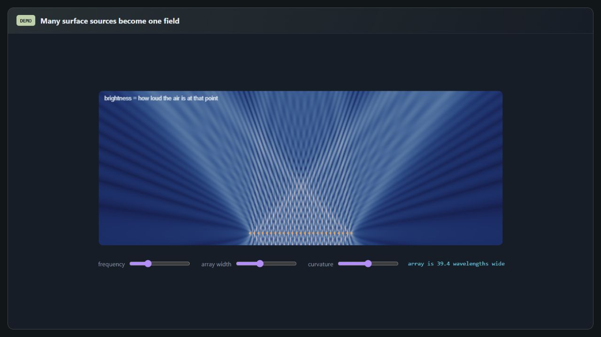
A coherent scalar point-source field is evaluated directly on the browser grid. Interactive and refined previews vary display resolution, not the source count used by the sum. It is a propagation teaching model, not the native radiation mesh.
Suspended · activate to run; playback pauses after the full panel leaves the vertical viewport.
Compare the resonance scales of a duct and a lumped neck-and-volume model, then see how coupling splits two interacting modes.
Move the coupling strength toward zero, then increase it. Compare the crossing uncoupled branches with the separated eigenvalues of the coupled pair.
Draws with
Artifact
Export
Purpose
Made with
Demonstrates
Wheel over the scene may zoom; move outside it to scroll the page.
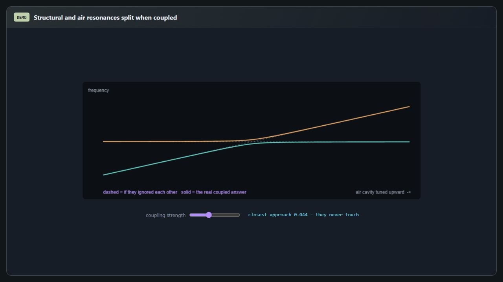
A live two-by-two coupled system illustrates avoided crossing and mixed mode character. It explains reduced coupling without claiming a resolved fluid–structure interface or a measured guitar-body response.
Suspended · activate to run; playback pauses after the full panel leaves the vertical viewport.
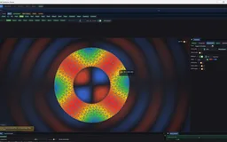
Recorded examples · 3Body and surrounding acoustic fieldDifferent geometries expose the relation between structural motion and the reduced field model.＋The complete articles are included below. Open a title for the full derivation, implementation discussion and original figures; each document loads when you reach it.
Open this document to read its complete text, figures and examples here.
Open this document to read its complete text, figures and examples here.
Open this document to read its complete text, figures and examples here.
Open this document to read its complete text, figures and examples here.
Open this document to read its complete text, figures and examples here.
Open this document to read its complete text, figures and examples here.
Open this document to read its complete text, figures and examples here.
Open this document to read its complete text, figures and examples here.
Open this document to read its complete text, figures and examples here.
Open this document to read its complete text, figures and examples here.